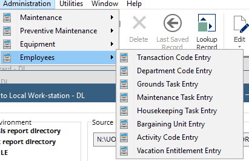

within_n_iqrs <- function(n, ...){
function(a_vector){
the_median <- median(a_vector)
the_iqr <- IQR(a_vector)
within_bounds((the_median-the_iqr*n), (the_median+the_iqr*n), ...)
}
}
mtcars |>
insist(within_n_iqrs(5), mpg) |>
group_by(cyl) |>
summarise(avg.mpg = mean(mpg))4 Data Quality
4.1 Review
Using package
assertr(from https://cran.r-project.org/web/packages/assertr/vignettes/assertr.html)verifyfor- data frames e.g. does a data frame have names code and department?
verify(has_all_names("code", "department"))
- data frames e.g. does a data frame have names code and department?
assertfor variables and without interaction e.g.
assert(within_bounds(0, Inf), some_column)assert(in_set(known_levels), some_column)is_not_empty <- function(x) if(x != "") return(TRUE)assert(is_not_empty, some_column)
insistfor variables after interacting with them e.g.
insist(within_n_mads(3), some_column)NB “The problem with
within_n_sdsis the mean and standard deviation are so heavily influenced by outliers, their very presence will compromise attempts to identify them using these statistics. In contrast withwithin_n_sds,within_n_madsuses the robust statistics, median, and median absolute deviation, to identify potentially erroneous data points.”How to build custom predicate generators:
insist_rowsfor rows with interaction e.g.
insist_rows(maha_dist, within_n_mads(3), dplyr::everything())- NB “
maha_distcomputes the average mahalanobis distance (kind of like multivariate z-scoring for outlier detection) of each row from the whole data set. The big idea is that in the resultant vector, big/distant values are potential anomalous entries.”
- NB “
chain_startandchain_endfor chains of assertionse.g.
library(assertr) our.data <- mtcars our.data$mpg[5] <- our.data$mpg[5] * -1 our.data |> chain_start() |> assert(within_bounds(0, Inf), mpg) |> insist(within_n_sds(4), mpg) |> chain_end()There are 2 errors across 2 verbs: - verb redux_fn predicate column index value 1 assert NA within_bounds(0, Inf) mpg 5 -18.7 2 insist NA within_n_sds(4) mpg 5 -18.7Error: assertr stopped execution
4.2 Data Dictionary Building

Note for Export Report:
S Type vs F: controlled vs calculated
pattern is basically like class